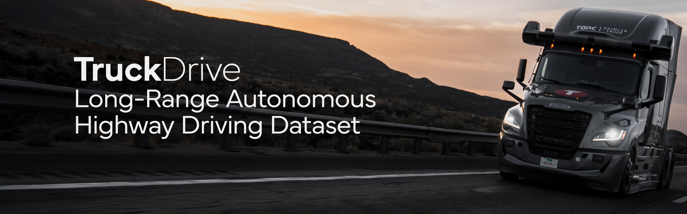
Existing autonomous driving datasets are largely centered on urban and short-range perception settings. In contrast, TruckDrive focuses on long-range highway autonomy, where safe planning requires reliable scene understanding hundreds of meters ahead, introducing a substantially different operating regime: long stopping distances, far-range observations, difficult weather and a strong dependence on high-quality multimodal sensing.
TruckDrive extends perception to 400 meters with a significantly higher density of labeled instances at long range. Compared to prior datasets, it maintains a more balanced distribution across distances and captures higher-speed and longer trajectories, reflecting the demands of safe highway driving.
Across instances, speeds, and trajectories, TruckDrive occupies a regime that is underrepresented in prior benchmarks. Click through the graphs below to see the comparisons more clearly!
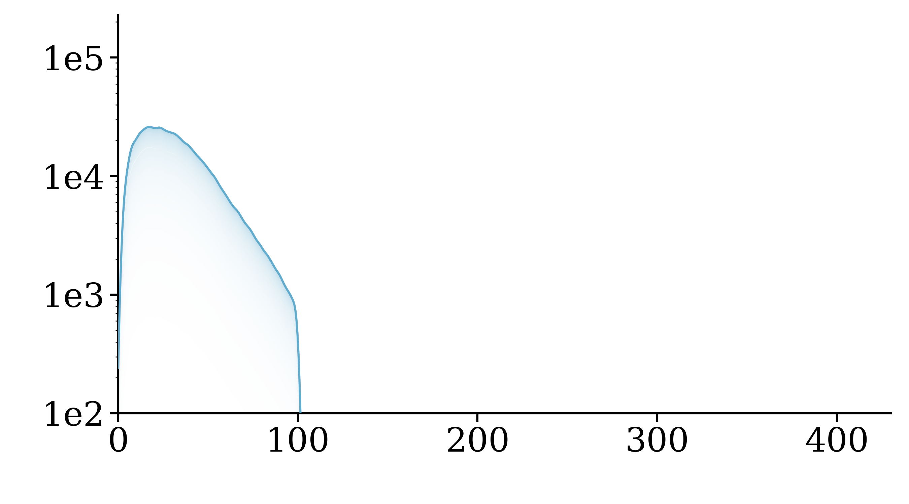
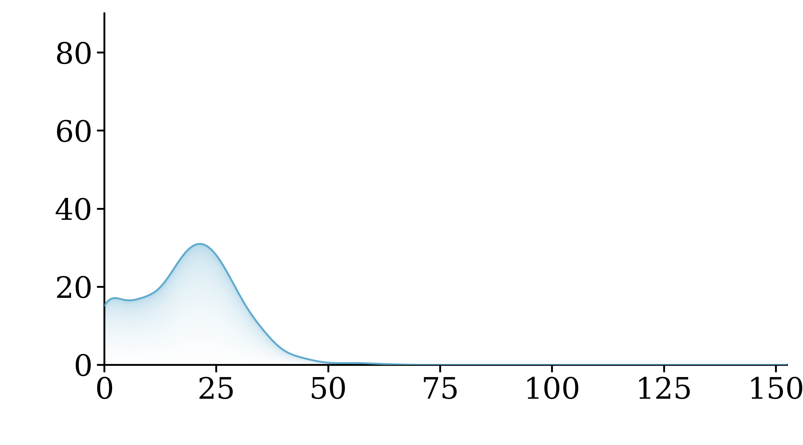
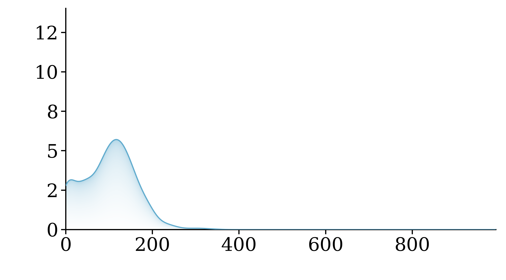
Safe highway autonomy for heavy trucks remains an open and unsolved challenge: due to long braking distances, scene understanding of hundreds of meters is required for anticipatory planning and to allow safe braking margins. However, existing driving datasets primarily cover urban scenes, with perception effectively limited to short ranges of only up to 100 meters. To address this gap, we introduce TruckDrive, a highway-scale multimodal driving dataset captured with a sensor suite purpose-built for long-range sensing: seven long-range FMCW LiDARs measuring range and radial velocity, three high-resolution short-range LiDARs, eleven 8MP surround cameras with varying focal lengths, and ten 4D FMCW radars. The dataset offers 475k samples with 165k densely annotated frames for driving perception benchmarking up to 1,000 meters for 2D detection and 400 meters for 3D detection, depth estimation, tracking, planning, and end-to-end driving over 20-second sequences at highway speeds. We find that state-of-the-art autonomous driving models do not generalize to ranges beyond 150 meters, with drops between 31% and 99% in 3D perception tasks, exposing a systematic long-range gap that current architectures and training signals cannot close.
Four-lane highway scene with full-range dynamic actors and an ego-vehicle lane change.
Our sensor suite, mounted on a semi-truck, is optimized for reliable perception in high-speed environments. Specifically, we employ seven FMCW LiDARs (AEVA Aeries II), capable of measuring up to 400 meters and providing radial velocity; three short-range LiDARs (Ouster OS0/OS1), to cover blind spots and objects very close to the ego vehicle; and ten 4D radars (Conti ARS540). Additionally, 11 to 15 RCCB cameras, depending on the configuration, with 9 short-/medium-focal cameras and 1 to 3 long-focal stereo cameras, provide high-resolution imaging (8MP) at all ranges. Use the buttons below to visualize the placement and coverage of each sensor family on the platform.
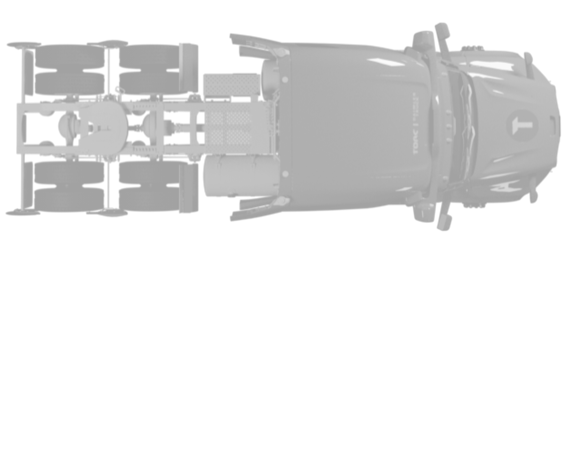
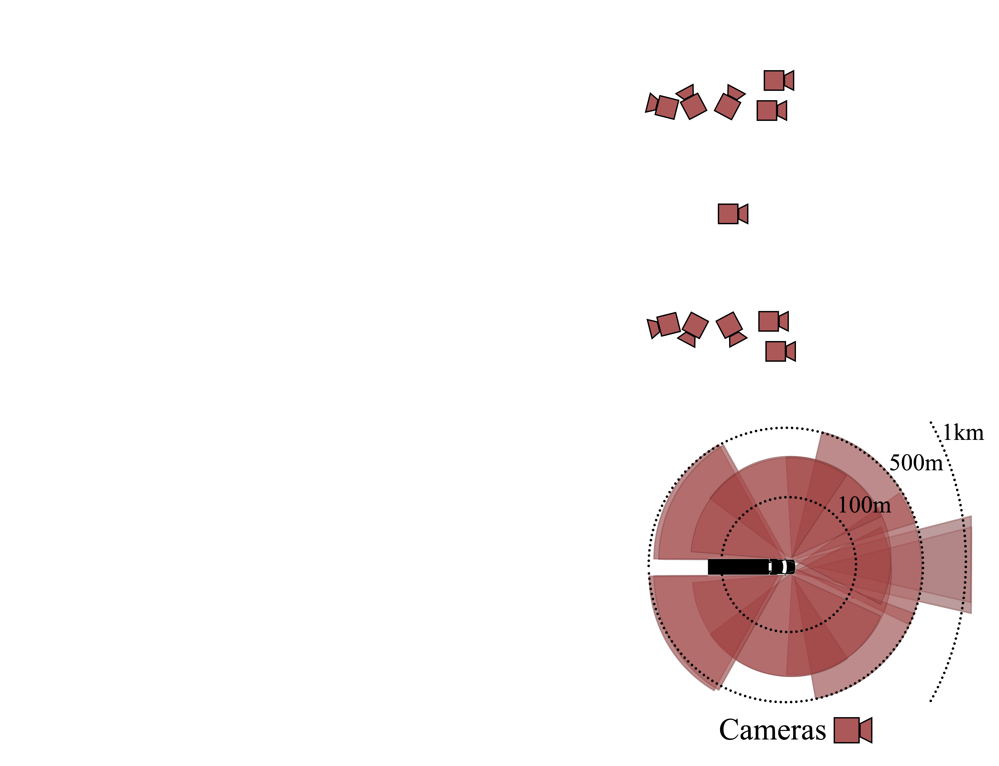
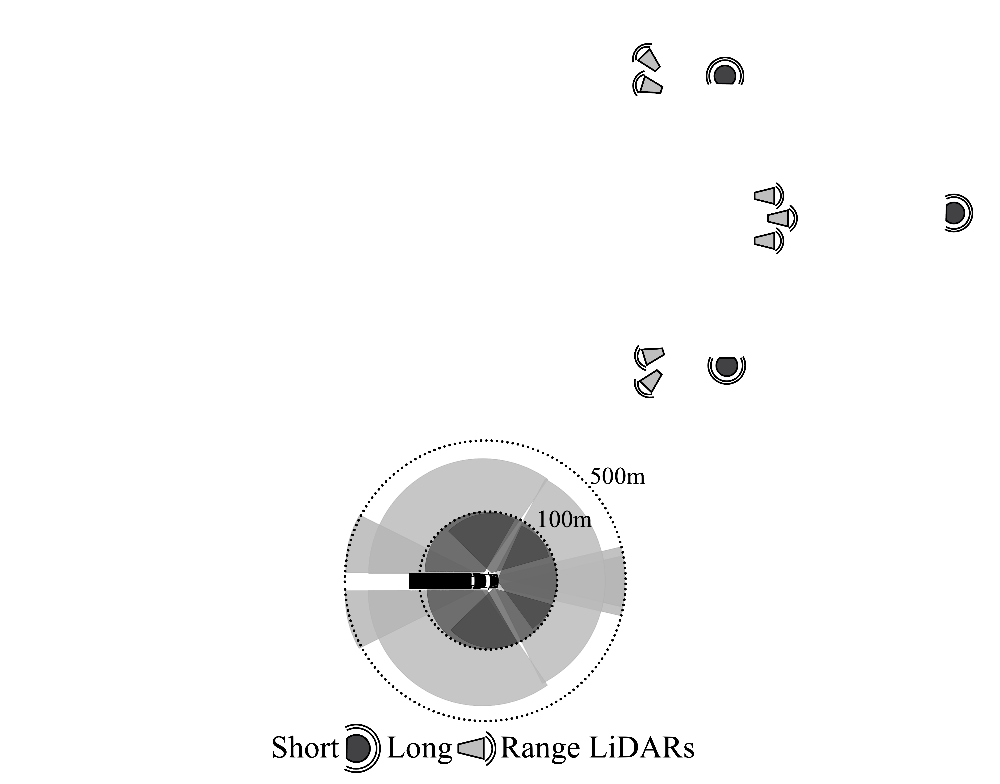
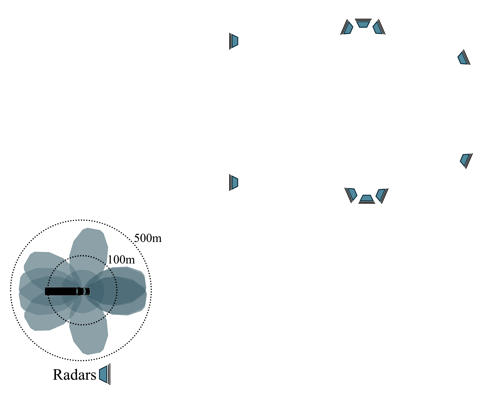
Click the buttons above to highlight the corresponding sensor families and their coverage.
The LiDARs in our setup rely on Frequency-Modulated Continuous-Wave (FMCW) technology, which makes them robust to adverse weather conditions and enables the capture of instantaneous radial velocity \(v_r\) for each point in the point cloud.
\[ v_r = \frac{\Delta \phi \cdot \lambda}{4\pi}\cos{\theta} \]
where \( \lambda \) is the wavelength and \( \theta \) is the angle of incidence.
Drag the slider to reveal moving objects.
To obtain reliable depth maps for evaluating both static and dynamic parts of the scene, we construct a high-quality ground truth by combining LiDAR-based mapping and motion segmentation. Static geometry is recovered through globally consistent LiDAR accumulation, while dynamic objects are identified via radial-velocity analysis and reinserted per frame. The resulting depth maps provide temporally consistent, globally aligned, and densely annotated depth for all camera views.
Drag the slider to compare the sparse LiDAR scan with the accumulated ground truth.
Crucially, TruckDrive exposes long-range perception challenges that remain largely unresolved by current state-of-the-art methods. As illustrated below, models designed for existing datasets exhibit systematic failures at long range, highlighting the need for datasets like TruckDrive that enable reliable evaluation and learning in this setting. Click a scene to switch the example.
A lost cargo object appears at long range, illustrating a critical safety case that current methods may fail to detect reliably.
Long-range perception errors also propagate to planning. Current planners struggle to produce stable and accurate forecasts in TruckDrive's long-range highway scenarios. In the examples below, the ground-truth trajectory is shown in green and the predicted trajectory in orange. Click a scene or method to switch the example.
See also our related publications addressing TruckDrive's long-range highway driving challenges, including ultra-long-range object detection and pretraining, pseudo-labeling, sensor fusion for adverse weather, scalable conditional video generation with pixel-wise losses and wide-baseline stereo rectification.
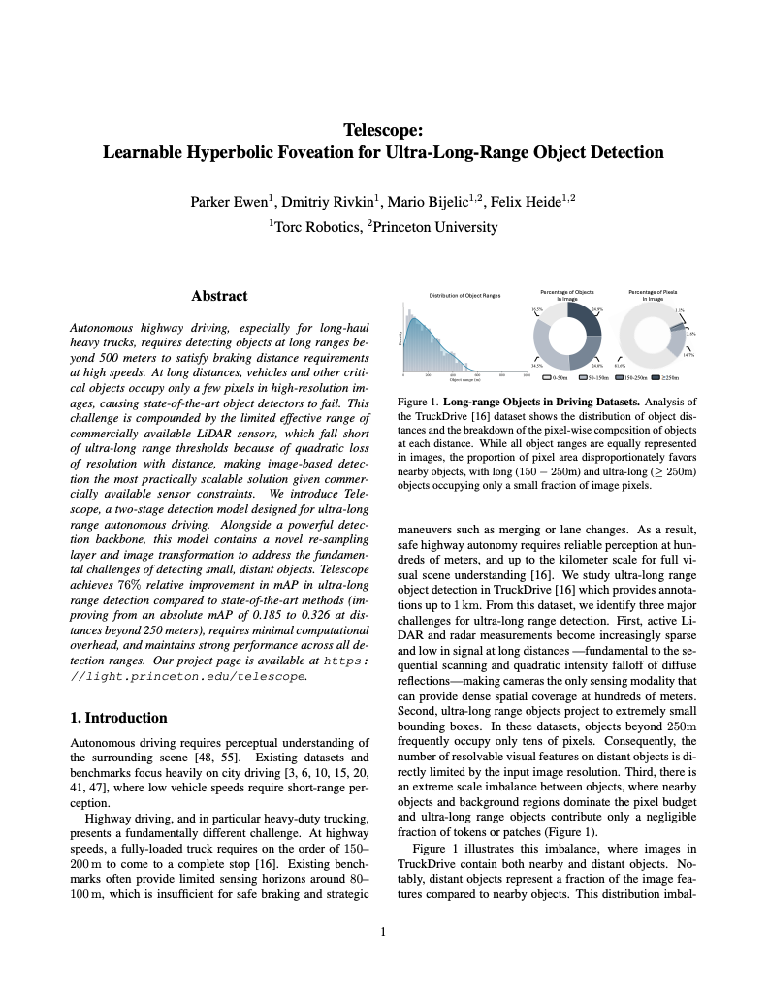
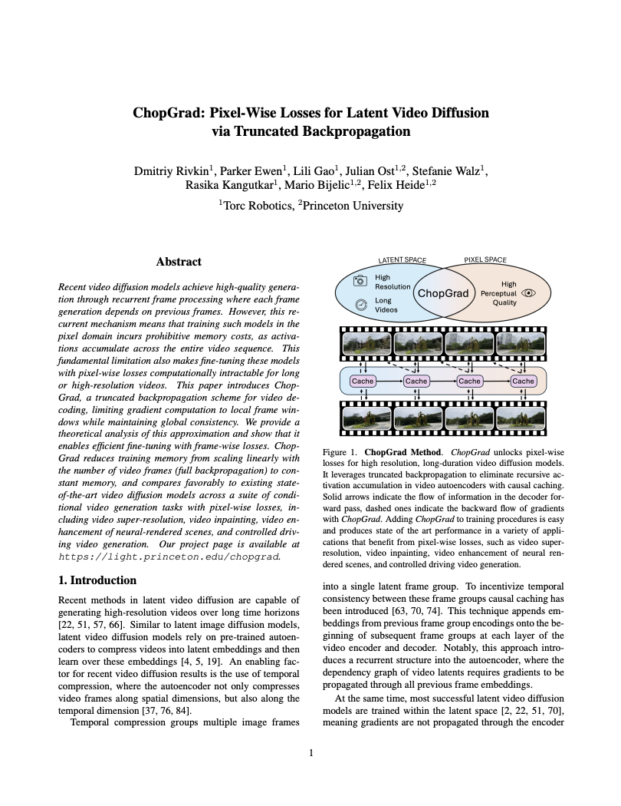
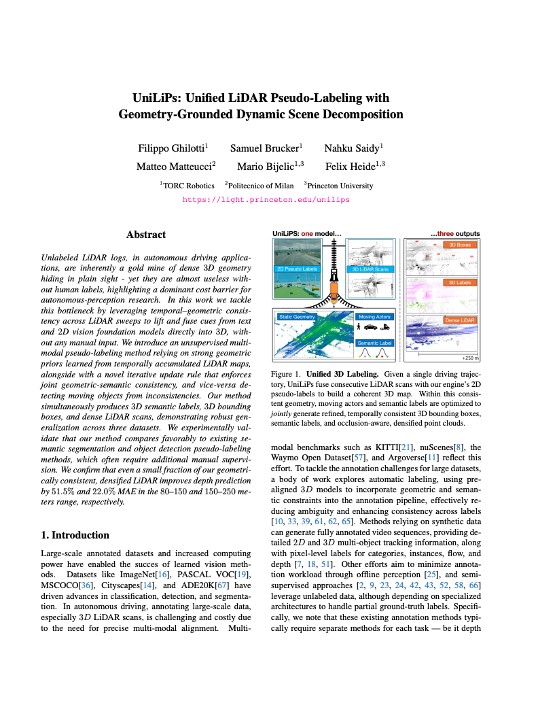
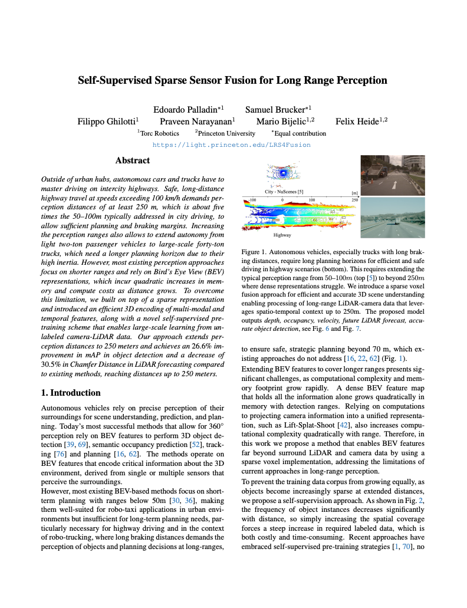
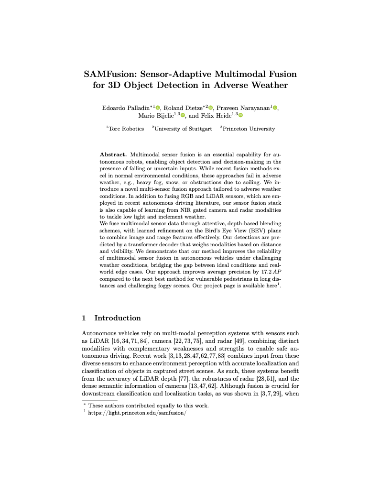
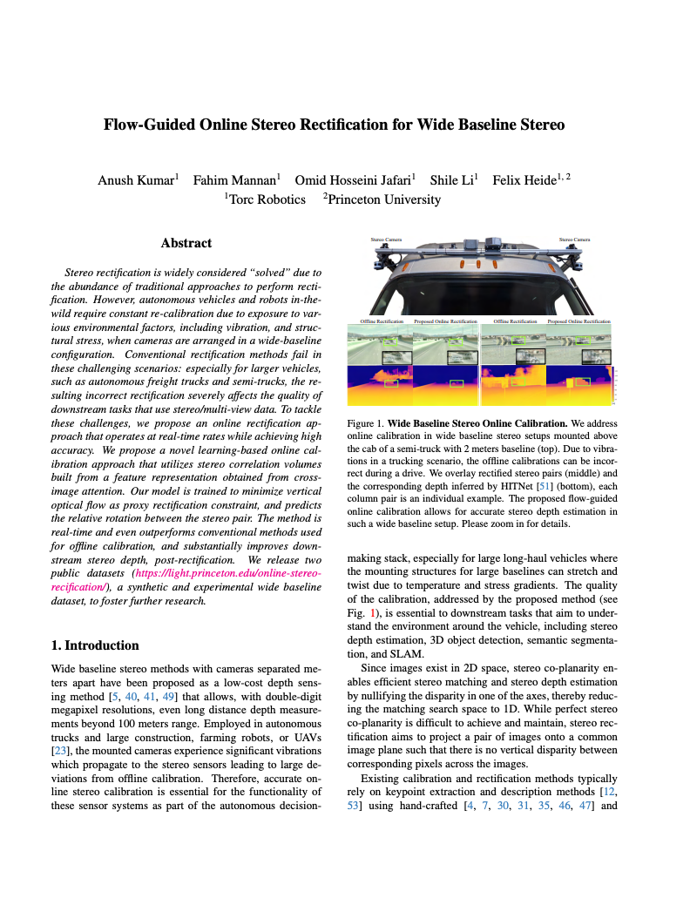
Dataset Release Terms
TruckDrive is released for non-commercial research use under the Torc Robotics Non-Commercial License v1.0. Commercial use requires a separate written license agreement with Torc Robotics.
For academic, educational, government, hobbyist, journalism, and non-profit public-interest uses permitted by the dataset license.
Read non-commercial licenseRequired for AV companies, commercial R&D, product development, commercial model training, contractors, and related technology use.
Commercial licensing detailsA plain-language guide explaining whether a given use case is considered non-commercial or commercial.
Check usage policyDataset Download
Please confirm that you have read the TruckDrive license terms before accessing the devkit or dataset files.
@inproceedings{ghilotti2026truckdrive,
author = {Ghilotti, Filippo and Palladin, Edoardo and Brucker, Samuel and Sigal, Adam and Bijelic, Mario and Heide, Felix},
title = {TruckDrive: Long-Range Autonomous Highway Driving Dataset},
booktitle = {Proceedings of the IEEE/CVF Conference on Computer Vision and Pattern Recognition (CVPR)},
year = {2026},
}